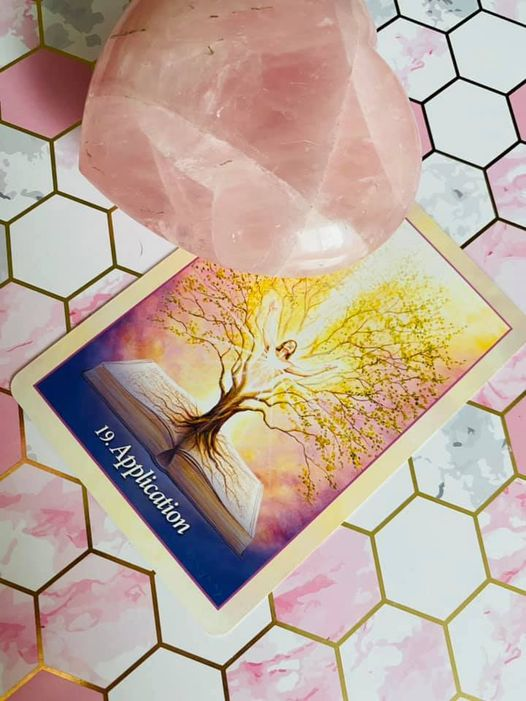
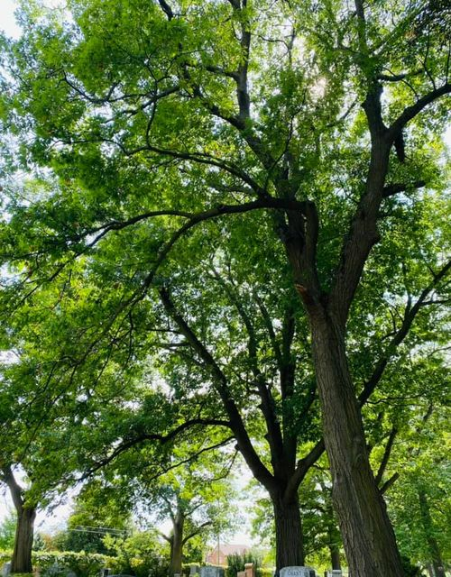

The application card.
apply yourself in ways that take you outside of your comfort zone. New beginnings are available to you if you allow yourself to reach out to the resources, learning new things helps one grow and expand into new opportunities and awareness.
The book of knowledge has always been there for you, having the accessibility and tools needed. It’s about looking within, finding what makes and brings you peacefulness. Being open minded to the new opportunities that present themselves will bring forth much success, in all ways.
Look beyond life itself , it is there …waiting
🙏💕🙏

~ THE VALLEY OF GOD ~
channeled message 😇💕😇
It is a sacred land that he has given you to experience this earthly realm. To be blessed by such beauty that it beholds is a treasured one, we ask that you treat it this way in order for it to last for the generations to come and all be one with humanity.
You see Dear One, the beauty that you see isn’t the true beauty that lies here in Heaven, but only a pure example of what is so. Treasure it, breathe it, it is Gods way of saying he loves you. Allowing the beauty that surrounds you daily, we ask that it be treated in such a way that always comes from love.
Before your time Dear One, this land was shared by so many, treated with so much love that humanity today does not understand the full capacity of it. Can you take what we have given you, to be blessed by such beauty of God's love is a true gift from him. He only wishes for love in return.
Every creature that is here on Earth serves a purpose, just as humanity does. Learn from one another, you shall seek so much inside of you that it will transform you into the person you are meant to be. LOVE…
We can all learn from one another, come together as one. It is only then you see great change and the beauty that it beholds. It all starts within. You see Dear One, we give you this land to live in the human form to breathe, to experience it in all ways. With love comes respect, we pray that you see the beauty behind each and every living thing that God has planted.
Love unfolds everything. With love, so much change can happen. To look into the eyes of God's creations, it brings a sense of knowing what home is truly like when it is your time to depart this physical world you live in.
Change is coming, be ready for positive change. Understanding the key of life is needed here.
Each of his creations serves a purpose for humanity, we ask that you open your heart to see the great beauty that lies within it.
Angel Blessings
To know that someday we will end up in our final resting place, we cannot bring materialistic things but we can bring the love that is in our hearts for those we hold dear , the beautiful memories that we were blessed to experience. Leave behind a legacy of love, commitment, a warm smile that made someone’s day.
Leave behind the example of love you have so that others may follow.
Set the bar high so that others know that struggles can turn into success’s, leave behind words of wisdom so others have guidance when in doubt.
Leave behind unconditional love so judgment doesn’t exist
Love is a powerful thing, it is more than just a word , it is in the deepest part of your heart and soul 🙏
Live every moment as precious as the breathe you take
Let all those you know and love, you love them 💝
Even when we leave this physical world, know that your spirit, your love, your memories continue on in the hearts of those you love.
We are all one
One light
One love
💝🙏💝
